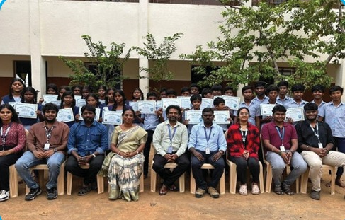

Cloud Computing is one of the most in-demand specializations in IT, shaping the future of data management, AI-driven applications, and enterprise solutions. This specialization aims to bridge the gap between academia and industry by equipping students with cloud-based deployment, infrastructure management, and cybersecurity skills.
Professor, NWC, SRMIST.
Associate Professor, NWC, SRMIST.
Associate Professor, NWC, SRMIST.
Associate Professor, NWC, SRMIST.
Assistant Professor, NWC, SRMIST.
Assistant Professor, NWC, SRMIST.
Assistant Professor, NWC, SRMIST.
Assistant Professor, NWC, SRMIST.
Assistant Professor, NWC, SRMIST.
Associate Professor, NWC, SRMIST.
Assistant Professor, NWC, SRMIST.
Assistant Professor, NWC, SRMIST.
Assistant Professor, NWC, SRMIST.
Faculty Incharge Dr. M. Saravanan, Dr. C. Fancy
Lab Name & Number :TP508 – Things of Future Lab
Location: 5th Floor, Tech Park
Research Facility : IoT Educational Kit
Supplier : Boodskap, Chennai.
The Things of Future Lab (ToF) is designed to provide an advanced IoT platform that enables
seamless connectivity with hardware devices, systems, and backends to build innovative
solutions. As IoT deployment requirements evolve, our lab integrates state-of-the-art AI,
machine learning, and blockchain technologies in collaboration with Boodskap, a global IoT
company headquartered in Dallas, Texas. This lab serves as a research and development
hub for students, faculty, and scholars to explore IoT-enabled smart applications, fostering
academic excellence and industrial innovation
To foster research collaboration and career growth,Bahir Das University (2021-2022) and Virtusa Consulting Services Pvt. Ltd. (2024-2027) have signed transformative MoUs, empowering students and faculty with cutting-edge cloud computing programs, AWS training, internships, and placement opportunities. While Bahir Das University focuses on academic research and knowledge exchange, Virtusa’s industry-driven initiative, with 47 students onboard, enhances hands-on learning and industry readiness, paving the way for future cloud computing professionals.
Recipient: Dr. M. Saravanan
Institution: IIT Roorkee
Duration: August 5 – December 6, 2024
Research Focus: Advanced Cloud Computing & Smart Infrastructure
Dr. M. Saravanan has been awarded the prestigious Anusandhan National Research Foundation Fellowship to advance research in cloud computing and smart infrastructure at IIT Roorkee. His work focuses on optimizing cloud resource allocation, security, and AI-driven smart infrastructure solutions.
Dates: July 25-26, August 29-30, September 30, October 1, 2024
Resource Person: Mr. S.B. Gowtham (Data Engineer, PayPal)
Venue: TP404/TP405 Seminar Hall, Tech Park
Participants: 64 (Internal)
Venue: Gnanodaya High School, Chengalpet, Tamil Nadu
Dates: December 9-13, 2024
Conveners: Dr. P. Balamurugan, Dr. M. Saravanan
The Hour of Code initiative introduced school students to fundamental coding concepts through hands-on sessions.
The Department of Networking and Communications remains dedicated to bridging the digital divide through impactful outreach programs!
